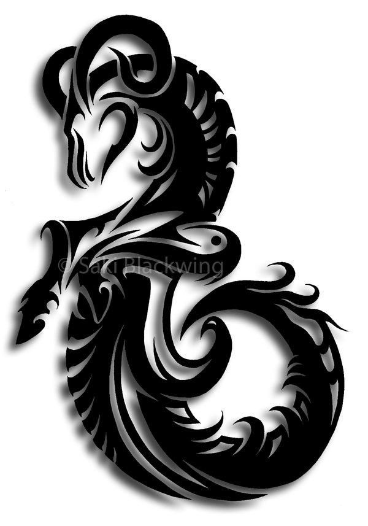

Capricorn / Makara Rashi
Master Planet : Saturn / Shani
Bho, Bhau ,Ja ,Ji, Jee, Jhi ,Khi, Khee ,Khu, Khoo ,Khey, Khay ,Kho, Khau ,Ga ,Gi, Gee, Ghee
This Rashi sign comprises of the first three charans of Uttarashada, Shravan complete and two charans of Dhanishta Nakshatras. The people under this sign are thin in body, long-necked and have thin teeth. They have hard hair on their scalp. They have strong bones. Sharpened chin is usually noticeable. They are stable and serious in nature. They set high standards for themselves.
Sometimes their private and social lives are different. They are critical in nature and even do not spare themselves in criticism. They are slow workers but work confidently only. They are usually seen having large families. They are usually not sensitive about means but aim at the end only.
They are introverts and are reserved in nature. They are highly ambitious and try utmost to acquire higher status in life. Their will power is strong. They are disappointed when they fail to achieve the goal they aspire set goal in their life. The seers and sages are also found under this sign. They may have to face rivalry and strong enmity in life. They are showy sometimes. Rise in destiny is marked at 32-33 years of age. They develop ailments associated with allergies, hypertension and weak-back.